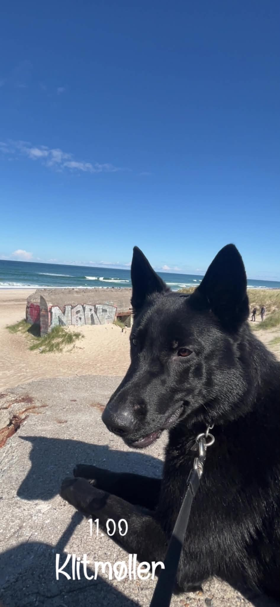

Agnes’ læseklub · efterår og vinter 2026
Gonzo &
vennerne
Syv hundehistorier om mod, venskab og gode opdagelser. Læs én om ugen i dit helt eget tempo.
Din læserejse
Historierne bliver lidt mere udfordrende undervejs — du kan altid læse en igen.
Læst 0 / 7
💡
Et ord, der driller? Spring roligt videre og prøv at forstå sætningen som helhed.